Olá, eu sou a
Larissa Ladeira
Estudante de ADS
No curso de ADS tenho me dedicado intensamente à criação de sites completos, desenvolvendo projetos que unem front-end moderno e intuitivo com banco de dados.
Domino MySQL para criação de bancos de dados, modelagem, consultas avançadas e integração com aplicações web. No front-end, aplico HTML, CSS e JavaScript para construir interfaces responsivas, funcionais e com ótima experiência do usuário.
Vamos conectar? Estou aberta a oportunidades e novos desafios!
Meu ContatoMinhas Skills
Formação
2024 - 2026
Anhaguera
Análise e Desenvolvimento de Sistemas
2024 - 2025
Udemy
Lógica de Programação
2021 - 2022
Senac
Pacote Office - Intermediário
2024 - 2025
Curso em Video
MySQL
2025 - 2025
Curso em Video
HTML5 e CSS3
2025 - 2026
Curso em Video
JavaScript
2026 - Atualmente
Udemy
Python
2026 - Atualmente
Udemy
Power BI
Projetos
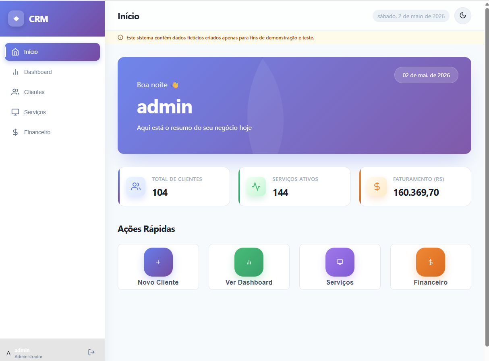
2026
💼 Sistema CRM - Gestão de Clientes e Serviços
Sistema web completo para gerenciamento de clientes, serviços e controle financeiro. Desenvolvido com foco em produtividade, organização e análise de dados em tempo real.
Saiba mais....
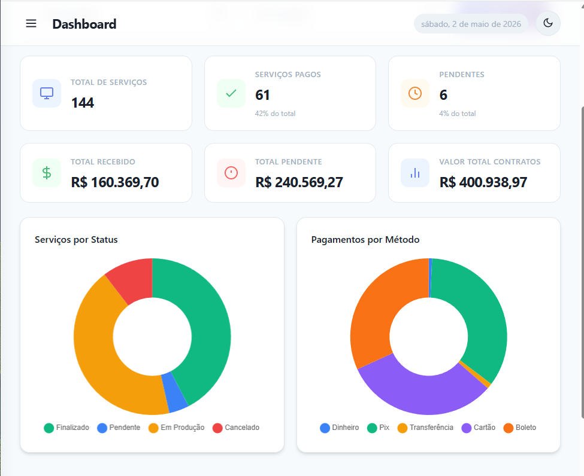
O projeto demonstra competências completas em desenvolvimento full stack e construção de sistemas reais:
Autenticação Segura com JWT: Implementação de login com geração de token e controle de acesso às rotas protegidas.
Dashboard Analítico: Gráficos interativos (Chart.js) com dados em tempo real para análise de serviços e faturamento.
Gerenciamento de Clientes: Cadastro, listagem, busca e visualização detalhada com histórico completo.
Controle Financeiro: Registro de pagamentos, cálculo automático de valores recebidos e pendentes.
Segurança com PIN: Proteção adicional para acesso a dados sensíveis dentro do sistema.
UX Moderna: Interface com modo escuro, navegação fluida e organização intuitiva.
🛠️ Tecnologias Utilizadas:
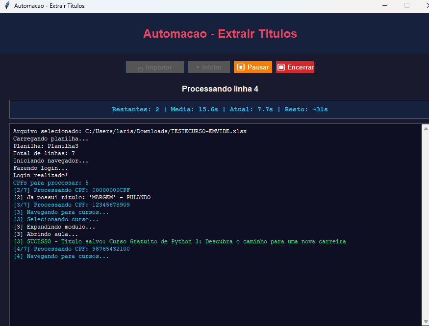
2026
🤖 DataSync Bot: Playwright & Excel (XLSX)
Automação RPA de alta performance para extração de dados e processamento offline com planilhas Excel.
Saiba mais....
⚙️ Web Scraping Avançado: Navegação com Playwright para extração de dados dinâmicos, lidando com autenticação e seletores complexos.
📂 Manipulação de Planilhas:
Integração com arquivos .xlsx usando Openpyxl, permitindo leitura e escrita de dados de forma local e veloz.
🔐 Segurança e Variáveis: Gerenciamento de credenciais sensíveis através de Dotenv (.env), garantindo que logins nunca fiquem expostos no código.
🧠 Lógica de Fluxo Crítico:
Sistema de tratamento de erros com try/except, formatação de dados e verificação de duplicidade na planilha para garantir integridade.
📺 Demonstração do Bot em Ação:
🛠️ Tecnologias Utilizadas:
Ver Código no GitHub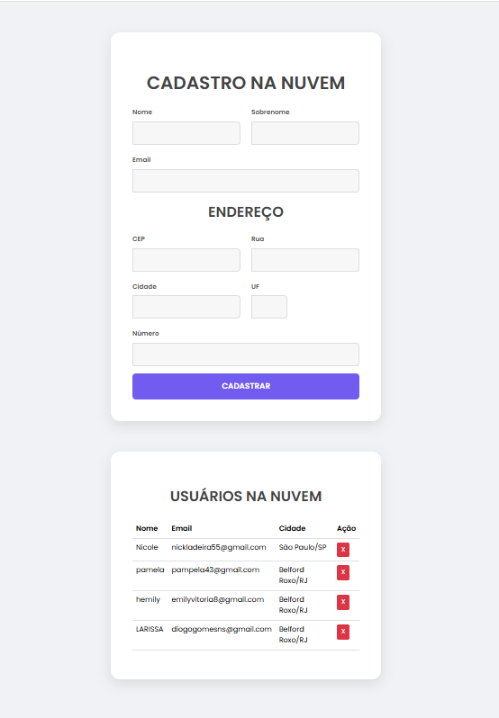
2026
🚀 Cadastro Cloud: Firebase & ViaCEP API
Sistema inteligente de gerenciamento de usuários com persistência de dados em nuvem e preenchimento automático de endereços via API externa.
Saiba mais....
☁️ Persistência na Nuvem: Integração total com o Firebase Firestore, garantindo que os dados sejam armazenados de forma segura e acessíveis de qualquer dispositivo em tempo real.
⚡ Atualização Live:
Utilização do método onSnapshot para monitorar o banco de dados, permitindo que a interface reflita mudanças instantaneamente sem Refresh.
📍 Automação de Endereço: Consumo da API ViaCEP com JavaScript assíncrono (Async/Await) para otimizar a experiência do usuário, preenchendo campos de Rua e Cidade automaticamente.
🛡️ Lógica de Negócio: Implementação de validações de campos obrigatórios, tratamento de erros para CEPs inexistentes e confirmação de exclusão de registros.
🛠️ Tecnologias Utilizadas:
Acesse o Site
2025
🎥 Landing Page: Um Filme Minecraft
Este projeto é uma landing page temática desenvolvida para apresentar informações sobre o lançamento do live-action de Minecraft. O objetivo foi criar uma interface visualmente imersiva, utilizando as cores e a estética do jogo, enquanto aplicava conceitos fundamentais de desenvolvimento web front-end, como semântica HTML5, estilização avançada com CSS3 e responsividade.
Saiba mais....
O projeto foi construído focando em uma estrutura limpa e na experiência do usuário (UX), destacando-se pelos seguintes pontos:
HTML5 Semântico: Utilização de tags como <header>, < nav>, < mai>, < article> e < footer> para garantir uma melhor indexação (SEO) e acessibilidade.
Design Visual Temático: Aplicação de uma paleta de cores baseada em tons de verde esmeralda e marrom, com gradientes lineares (linear-gradient) no cabeçalho e tipografia personalizada via Google Fonts (famílias Sriracha e Nunito Sans).
Responsividade: Implementação de Media Queries para adaptar o menu de navegação e as imagens em telas menores, garantindo que o conteúdo seja legível em dispositivos móveis.
Responsividade: Implementação de Media Queries para adaptar o menu de navegação e as imagens em telas menores, garantindo que o conteúdo seja legível em dispositivos móveis.
Layout Moderno:Uso de Flexbox para centralizar elementos e organizar o sistema de navegação de forma equilibrada.
🛠️ Tecnologias Utilizadas:
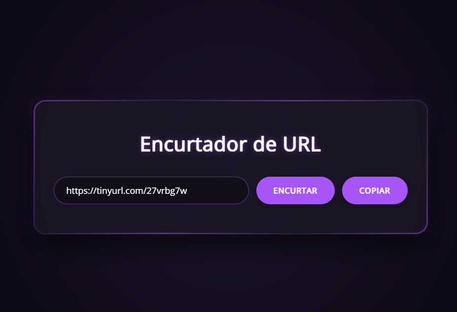
2026
🔗 Encurtador de Links com API – TinyURL
Aplicação web desenvolvida para gerar URLs curtas em tempo real por meio da integração com uma API externa. O projeto utiliza JavaScript para validação de dados, requisições assíncronas e manipulação do DOM, aliado a um layout moderno com efeitos visuais e design responsivo construído com HTML5 e CSS3.
Saiba mais....
O projeto foi desenvolvido com foco em usabilidade, estética moderna e integração com serviços externos, destacando os seguintes pontos:
Consumo de API Externa: Integração com o serviço TinyURL por meio de requisições HTTP utilizando fetch(), permitindo encurtar links dinamicamente.
Validação de Dados: Verificação da existência da URL antes do envio, além de tratamento de erros para falhas de conexão ou respostas inválidas da API.
Manipulação do DOM: Atualização do campo de entrada com a URL encurtada e seleção automática do texto para facilitar a cópia.
Design Moderno: Interface inspirada em estilos futuristas com glassmorphism, bordas iluminadas, gradientes radiais e sombras suaves, utilizando variáveis CSS para padronização das cores.
Responsividade: Uso de Flexbox e Media Queries para adaptar o layout a diferentes tamanhos de tela, garantindo boa experiência em dispositivos móveis.
Boas Práticas: Organização do código, separação entre estrutura (HTML), estilos (CSS) e lógica (JavaScript), além de foco em acessibilidade visual e clareza na interação.
🛠️ Tecnologias Utilizadas:
Acesse o Site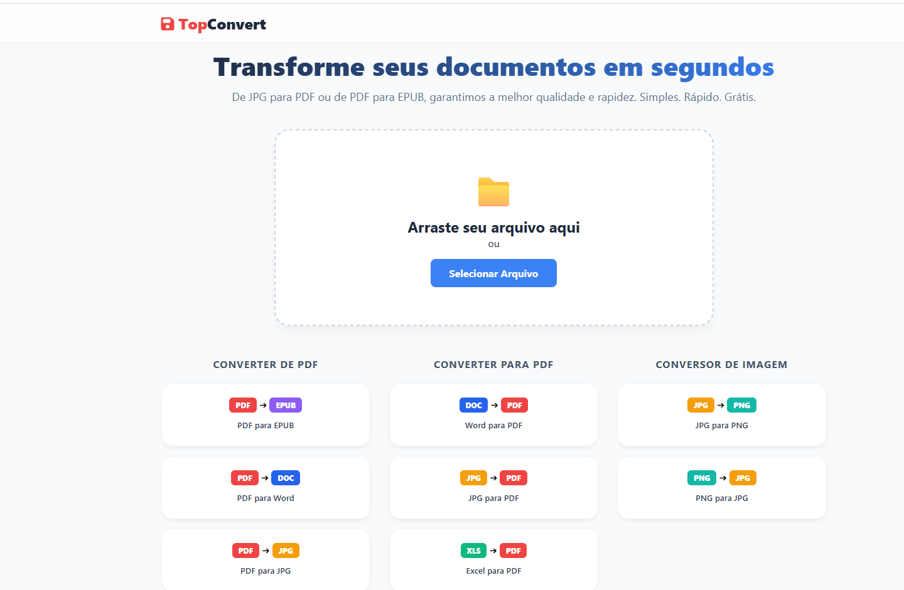
2026
📄 TopConvert Pro – Conversor de Arquivos
Plataforma robusta de conversão que combina o poder do processamento local com um backend especializado em Python. Desenvolvida para lidar desde simples imagens até documentos complexos que exigem alta precisão de layout.
Saiba mais....
Destaques da Arquitetura:
Backend em Python (API): Implementação de um servidor para processamento pesado, utilizando bibliotecas especializadas para realizar a conversão de PDF para DOCX/XLSX. O backend garante que estruturas de tabelas e parágrafos sejam preservadas com precisão profissional.
Integração Híbrida: Uso de Fetch API e FormData para comunicação assíncrona entre o front-end e o servidor Python, permitindo que o usuário continue interagindo com a página enquanto o documento é processado.
Conversão Client-Side: Mantém a agilidade para conversões de imagens e PDF para EPUB diretamente no navegador via jsPDF e PDF.js, otimizando o uso de recursos e garantindo privacidade.
Processamento de Dados: Manipulação avançada de Blobs e ArrayBuffers para gerenciar o tráfego de arquivos binários entre o cliente e o servidor de forma eficiente.
🛠️ Tecnologias Utilizadas:
Acesse o Site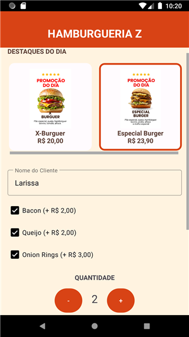
2026
🍔 Hamburgueria Z - Pedidos Mobile
Aplicativo Android nativo para gestão e personalização de pedidos de lanches. Desenvolvido para oferecer uma experiência intuitiva de escolha, com cálculos de preços em tempo real e integração com serviços de comunicação do dispositivo.
Saiba mais....
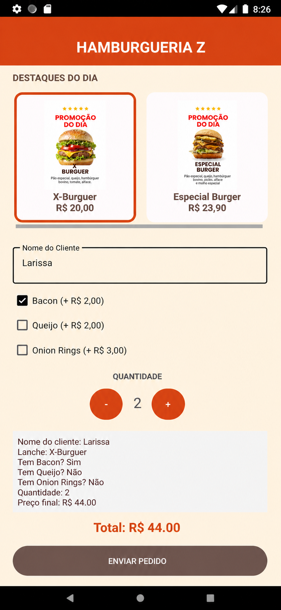
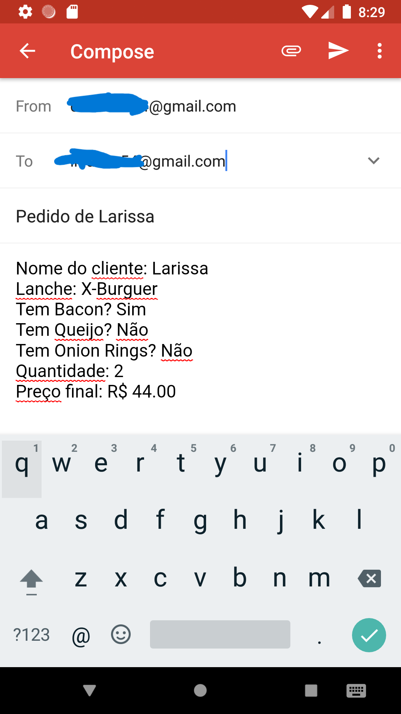
O projeto demonstra competências sólidas em desenvolvimento Android nativo e lógica de programação Java:
Interface Material Design: Uso de MaterialCardView para seleção visual de produtos, TextInputLayout para entradas de texto modernas e botões interativos com feedback visual.
Cálculo Dinâmico em Tempo Real: Lógica em Java que processa automaticamente o valor total do pedido conforme o usuário seleciona adicionais (Bacon, Queijo, Onion Rings) e ajusta quantidades.
Integração com Android Intents: Sistema de fechamento de pedido que gera um resumo detalhado e utiliza o protocolo ACTION_SENDTO para exportar os dados via e-mail diretamente do smartphone.
Componentes de UI Complexos: Implementação de ScrollView para garantir acessibilidade em telas menores e HorizontalScrollView para navegação fluida entre os destaques do cardápio.
Boas Práticas de Desenvolvimento: Organização de código em métodos reutilizáveis, gerenciamento de estados de componentes e uso de recursos externos (strings.xml e colors.xml) para fácil manutenção.
Ferramentas: Desenvolvido no Android Studio utilizando Java e XML, testado em dispositivos físicos e emuladores para garantir performance e responsividade nativa.
🛠️ Tecnologias Utilizadas:
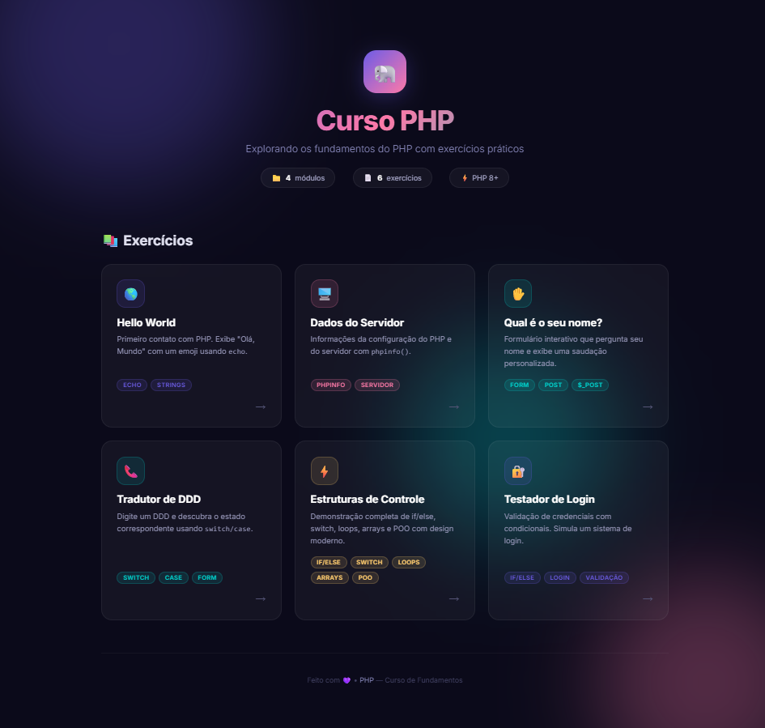
2026
🐘 Painel de Estudos - PHP Estruturado
Plataforma de estudos prática com deploy em servidor real, explorando lógica de programação estruturada em PHP, controle de fluxo e integração com front-end moderno.
Saiba mais....
O projeto demonstra competências sólidas em desenvolvimento Back-End estruturado e organização de projetos web:
Deploy Dinâmico Online: Hospedagem configurada com sucesso em servidor de produção PHP, permitindo o processamento real de scripts lógicos e acesso público global.
Estruturas de Controle e Lógica: Implementação prática de fluxos condicionais complexos (If/Else aninhados) e estruturas de seleção (Switch/Case com controle de break) para tomadas de decisão no código.
Modularização e Arquitetura de Pastas: Organização modular do projeto dividida em diretórios independentes para cada módulo de exercício, facilitando a escalabilidade, manutenção e legibilidade do código-fonte.
Integração Front-End Moderno: Interface construída com técnicas avançadas de CSS, incluindo layout responsivo baseado em CSS Grid/Flexbox, efeitos de transparência estilo Glassmorphism e estilização de badges indicativas.
Boas Práticas de Configuração: Gerenciamento de ambiente web com versionamento Git bem estruturado, ignorando arquivos desnecessários através do .gitignore e preparando a base para futures integrações com bancos de dados.
Ferramentas: Desenvolvido utilizando VS Code, testado em ambiente local e homologado diretamente em servidor de hospedagem com suporte nativo a PHP 8+.
🛠️ Tecnologias Utilizadas:
Ver Repositório & APK 🚀 Ver Projeto Online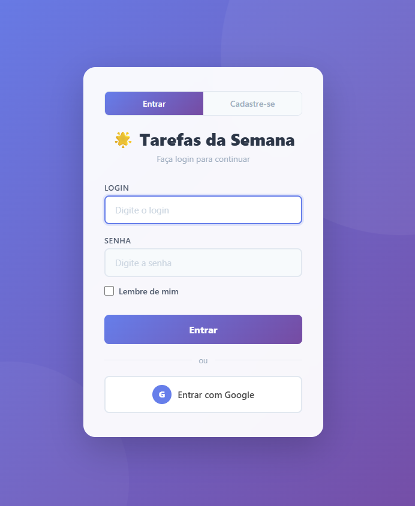
2026
📋 Lista de Tarefas Gamificada - Gestão Infantil
Sistema web completo para gerenciamento de tarefas infantis com sistema de moedas, loja de prêmios e painel administrativo. Desenvolvido em PHP com MySQL e Docker.
Saiba mais....
O projeto transforma tarefas domésticas em uma experiência gamificada para crianças:
Sistema de Moedas e Gamificação: Crianças ganham moedas ao completar tarefas, com progressão por níveis (Plantinha, Filhote, Estrela, Fogo, Forte, Campeão) e metas de economia.
Loja de Prêmios e Roleta: 6 faixas de premiação (150 a 1100 moedas) com prêmios fixos em dinheiro e uma roleta de sorteios com recompensas aleatórias animadas.
Painel Administrativo: Gestão completa de tarefas por criança/dia da semana, controle de moedas (bônus/multas), aprovação de sugestões e extrato financeiro detalhado.
Autenticação e Segurança: Login com sessão PHP, suporte a Google OAuth 2.0, tokens "Lembrar-me" e proteção CSRF em todos os formulários.
Temas Personalizados: Cada criança possui tema visual único (Forsaken, Princesa, Neutro) com cores, imagens de fundo e foto de perfil customizáveis.
Sistema de Mensagens: Comunicação integrada entre crianças e administrador com notificações em tempo real.
🛠️ Tecnologias Utilizadas:
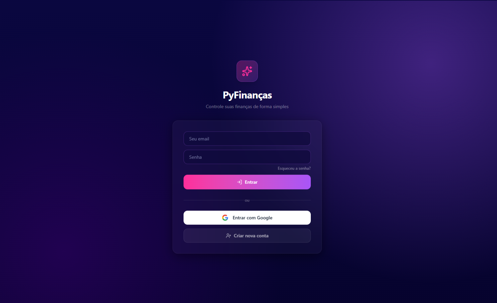
2026
💰 PyFinanças - Controle Financeiro Pessoal
Aplicação web full-stack para controle financeiro pessoal com dashboard, gestão de dívidas, investimentos e notificações push. Construído com React, TypeScript e Supabase.
Saiba mais....
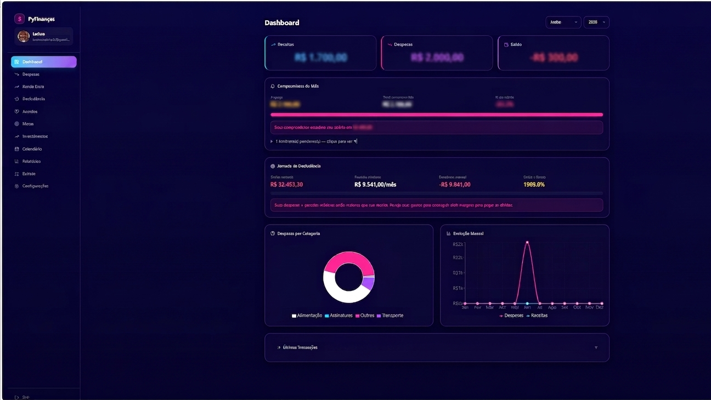
Plataforma completa para organização e planejamento financeiro:
Dashboard Financeiro: Visão geral com receitas, despesas, saldo, patrimônio líquido e gráficos interativos (Recharts) para análise mensal e anual.
Gestão de Dívidas: Estratégias Bola de Neve (menor saldo) e Avalanche (maior juros) com simulador de liberdade financeira e previsão de quitação.
Carteira de Investimentos: Controle de ações, FIIs, CDBs e criptomoedas com acompanhamento de performance da carteira.
Controle de Gastos: Despesas mensais com orçamentos por categoria, transações recorrentes, lembretes de contas a pagar e calendário financeiro.
Notificações Push: Lembretes de contas a vencer via Firebase Cloud Messaging com Supabase Edge Functions.
Mobile Nativo: Compilação para Android via Capacitor, permitindo uso como aplicativo nativo no smartphone.
🛠️ Tecnologias Utilizadas: